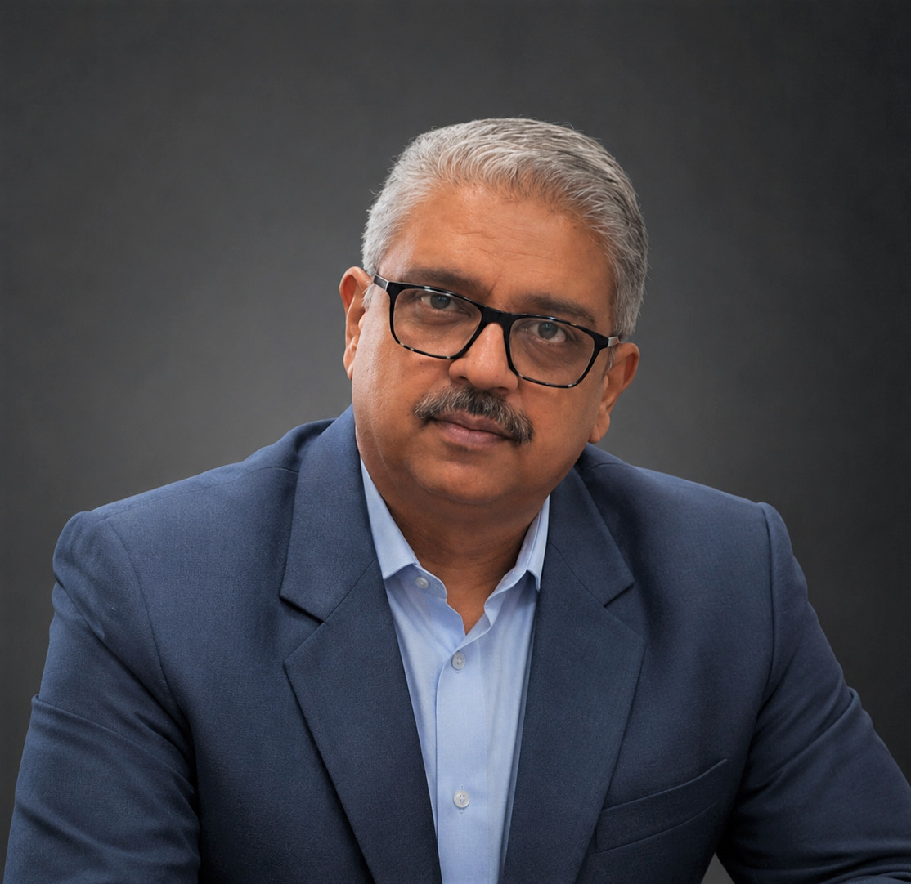
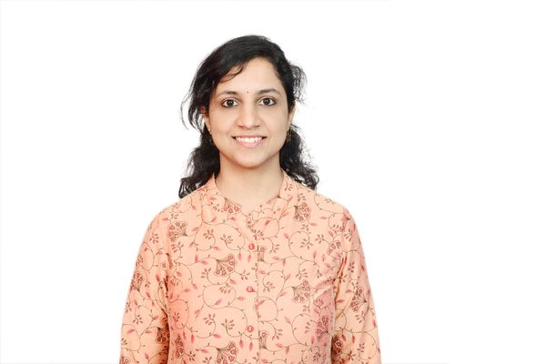
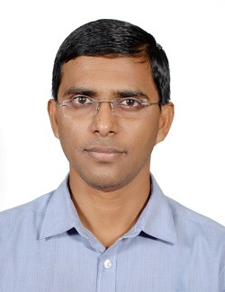
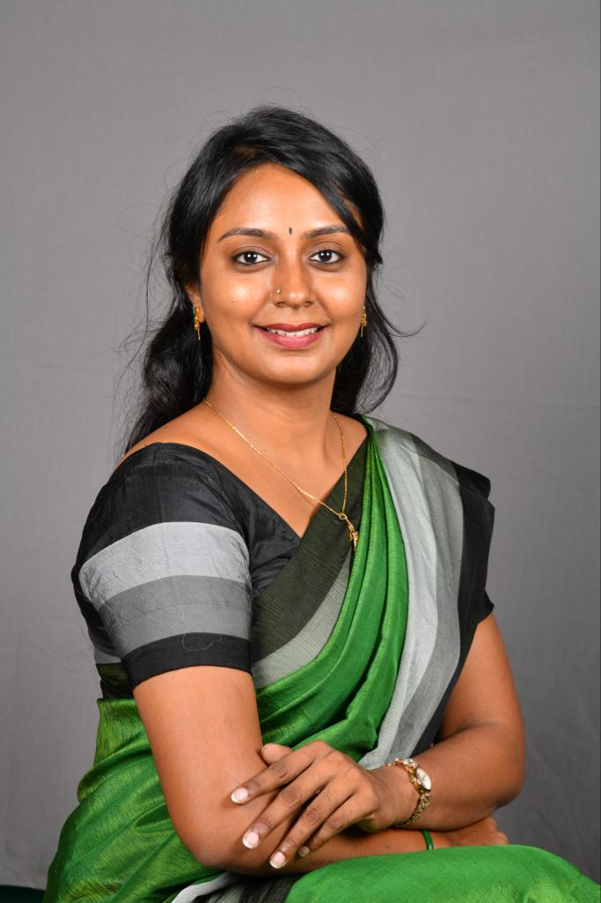
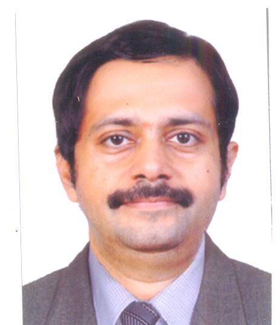

Editorial Board
The International Journal of Ayurveda is guided by a distinguished editorial board comprising leading experts in Ayurvedic medicine, research, and allied health sciences from around the world. We are currently constituting our editorial board and welcome expressions of interest from qualified scholars and clinicians.
Editor-in-Chief

Dr. Aakash Kembhavi
MD (Ayu-Shalya), PGDMLS, MS (Counseling & Psychotherapy)
Academician, Clinician & Researcher
Contact: editor@internationaljournalofayurveda.org
Phone: +91 9886759499
Office Address: 1 F C, Om Annexe, Shirur Park Main Road, Prashant Colony, Vidyanagar, Hubli - 580031, Karnataka, India
Dr. Aakash Kembhavi leads the International Journal of Ayurveda with a vision to bridge traditional Ayurvedic wisdom with contemporary scientific research methodologies. Under his editorial leadership, the journal is committed to the highest standards of academic integrity, COPE-compliant publication ethics, and rigorous double-blind peer review.
Associate Editors
The following positions are currently open. We invite qualified scholars and clinicians with postgraduate credentials (MD Ayu / PhD or equivalent) to express their interest.
Associate Editor — Clinical Research
Dr. Suprabha Hegde
MS (Shalya Tantra), BAMS, PG Diploma in Clinical Research | Lead – Research, Apollo AyurVAID Hospitals, Bangalore
Dr. Hegde leads research at Apollo AyurVAID Hospitals, Bangalore, managing end-to-end clinical trials in integrative Ayurvedic care, including Ministry of AYUSH-sponsored studies. With over 15 years of experience spanning clinical practice, herbal product development, and regulatory research, she has authored multiple peer-reviewed publications in Ayurveda and integrative medicine.

Associate Editor — Fundamental Sciences
Dr. Vrinda Bhat
MD (Rasashastra & Bhaishajya Kalpana), BAMS | Research Officer, Jayadeva Memorial Rashtrotthana Hospital and Research Centre
Dr. Bhat holds an MD in Rasashastra and Bhaishajya Kalpana (Ayurvedic Pharmacology) and brings over eight years of research experience, including as Senior Research Fellow at the Central Ayurveda Research Institute under CCRAS, Ministry of AYUSH. Her work spans pharmaceutical standardization, phytochemical analysis, and clinical trials in diabetes management, with ten peer-reviewed publications.

Associate Editor — Traditional Knowledge & Classical Studies
Dr. Khalid B.M
MD (Ayu) Samhita and Sidhanta | Associate Professor, Spoorthi Ayurveda Medical College and Dr. S.V. Savadi Ayurvedic Hospital, Gangavathi, Karnataka
Dr. Khalid is Associate Professor of Samhita and Sidhanta and Chief Coordinator of the Avishkara Central Research Laboratory at SJG Ayurvedic Medical College & Hospital, Koppal, with seven years of research and postgraduate teaching experience. An RGUHS-approved research examiner, he has authored a textbook on Research Methodology and Biostatistics in Ayurveda alongside peer-reviewed work on validated clinical assessment scales.
Associate Editor — Integrative Medicine & Public Health
Position Open
Responsible for manuscripts on integrative medicine, modern-traditional synthesis, public health applications, and healthcare policy.
Associate Editor — Research Methodology & Publication Ethics
Position Open
Responsible for manuscripts on research design, biostatistics, evidence synthesis, and publication ethics in Ayurvedic research.
Section Editors
Section Editors manage specific thematic sections of the journal and coordinate with reviewers in their area of expertise.
Section Editor — Panchakarma & Clinical Procedures
Position Open
Section Editor — Shalya & Shalakya Tantra
Position Open
Section Editor — Dravyaguna & Rasashastra
Position Open
Section Editor — Prasuti Tantra & Kaumarabhritya
Position Open
Section Editor — Swasthavritta & Yoga
Position Open

Section Editor — Ayurvedic Education & Institutional Policy
Dr. Madhumitha S
MD (Ayurveda) Samhita & Siddhanta, MSc Psychology, PhD Scholar | Ayurvedic Physician, Chennai
Dr. Madhumitha is an Ayurvedic physician and PhD scholar with over four years of clinical, academic, and research experience, including as Senior Research Fellow under CCRAS, Ministry of AYUSH. She has presented at fourteen national and international conferences and published on classical Ayurvedic literature and integrative oncology care.
Statistical Editor
The Statistical Editor reviews the biostatistical and methodological soundness of submitted manuscripts.
Statistical Editor
Dr. Ilavarasi K
BDS, MPH (Gold Medalist) — Epidemiology & Biostatistics | Project Research Scientist, AIIMS Madurai
Dr. Ilavarasi holds a Master of Public Health in Epidemiology and Biostatistics, completed as a gold medalist, and currently serves as a Project Research Scientist at AIIMS Madurai. She brings extensive experience in biostatistical analysis, large-scale survey research, and data quality monitoring across national public health projects, including work with ICMR-NCDIR and NFHS.
International Advisory Board
The International Advisory Board provides strategic guidance, ensures global standards of excellence, and represents the journal's commitment to international scholarship in Ayurveda.
Advisory Board Positions Open
Senior Advisor — North America
Position Open
Senior Advisor — Europe
Position Open
Senior Advisor — Asia Pacific
Position Open
Senior Advisor — Middle East & Africa
Position Open
Senior Advisor — Clinical Research
Position Open

Senior Advisor — Pharmacology & Drug Development
Dr. Sathyanarayana B
MD (Ayurveda) — Bhaishajya Kalpana | Principal, Medical Superintendent & Director R&D, Muniyal Institute of Ayurveda Medical Sciences, Manipal
Dr. Sathyanarayana is Principal, Medical Superintendent, and Director of Research & Development at Muniyal Institute of Ayurveda Medical Sciences, Manipal, with 25 years of experience in Ayurvedic pharmaceutics. He has published over 25 research papers, serves on the Ayurveda subcommittee of the Pharmacopoeia Commission for Indian Medicine, and chairs the PG Syllabus Committee for Rasashastra and Bhaishajya Kalpana at NCISM.
Senior Advisor — Traditional Knowledge Systems
Position Open
Editorial Responsibilities
Manuscript Review
All editorial board members participate in the initial screening and quality assessment of submitted manuscripts within their area of expertise.
Peer Review Oversight
Associate and Section Editors manage the peer review process, selecting appropriate reviewers and ensuring timely, constructive reviews.
Quality Assurance
Editorial board members ensure all published articles meet the journal's standards for scientific rigour, methodological soundness, and academic integrity.
Strategic Direction
Board members contribute to journal policy, special issue planning, and the long-term development of the journal's scope and reputation.
Express Your Interest
If you are interested in joining the editorial board, please write to us with your CV and a brief statement of your area of expertise and interest.
Email: editor@internationaljournalofayurveda.org
Editorial Office: +91 9886759499
Mailing Address: 1 F C, Om Annexe, Shirur Park Main Road, Prashant Colony, Vidyanagar, Hubli - 580031, Karnataka, India